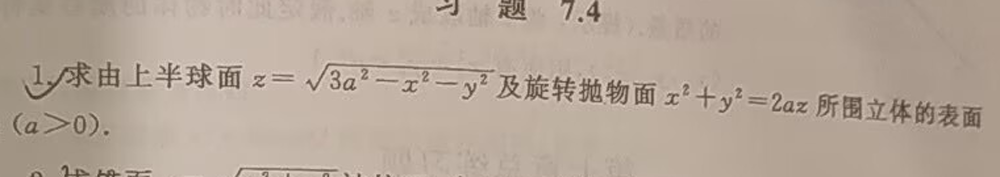
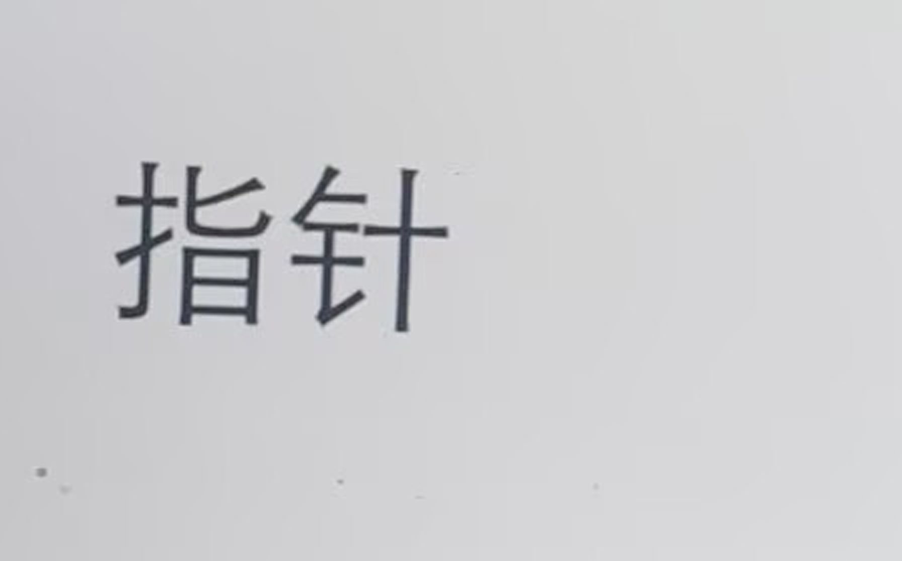
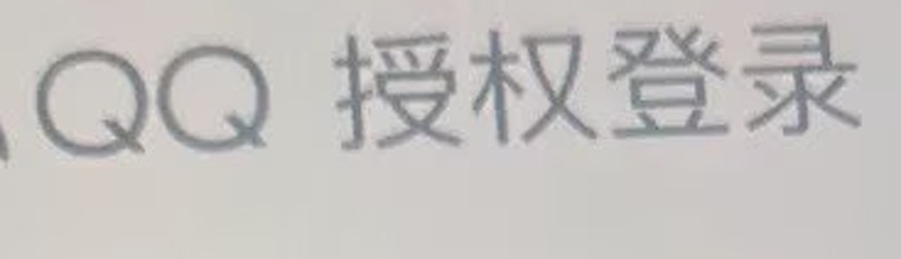
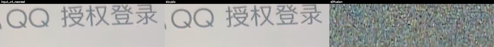

未找到 summary.json，以下仅展示对比图与失败样本（若存在）。
无可用排行榜数据（缺少 metrics.csv 或 method_stats）。
无 baseline 对比数据。
无 OCR summary 数据。
无 OCR 细节数据。
无 OCR 分布统计。
暂无历史记录。
暂无可用方法级趋势数据（可通过新版本 history 累积后自动显示）。
| preset | quality tier | speed tier | expected cost | steps | min_side | edge_sharpen | max_luma_delta | color_lock | notes | tag |
|---|---|---|---|---|---|---|---|---|---|---|
| text-fast | 文本可读性优先（轻锐化） | 高吞吐 | 约 0.7x ~ 0.8x | 120 | 288 | 0.2 | 16.0 | 0.95 | 推荐批量巡检、实时预览与低时延场景。 | ⭐ 推荐 |
| text-balanced | 默认推荐（质量/速度平衡） | 中等 | 1.0x（基线） | 180 | 352 | 0.35 | 14.0 | 0.98 | 推荐默认上线档，适合多数店招/票据/截图文本增强。 | ⭐ 推荐 |
| text-best | 文本细节极致（强锐化） | 较慢 | 约 1.3x ~ 1.5x | 260 | 384 | 0.45 | 12.0 | 1.0 | 推荐离线高质量重建或关键样本复核。 |
当前运行未提供 diffusion 配置快照。
text-balanced，作为组织内统一基线，避免后续口径漂移。text-fast，并在报告中保留 expected cost 记录。text-best，其结果可作为质量兜底版本归档。无失败记录。
| image | bicubic | realesrgan | diffusion | comparison |
|---|---|---|---|---|
| eval_001 | | - | | |
| eval_002 |  | - | ||
| eval_003 | - | | ||
| eval_004 |  | - | ||
| eval_005 |  | - |  |